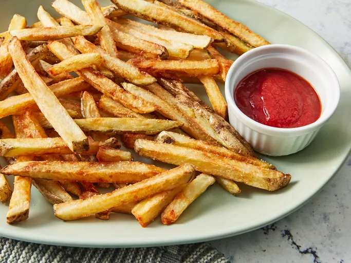

French Fries Recipes
Document

Description:
French fries, also known as fries or chips, are a popular side dish made by deep-frying cut potatoes until they are crispy on the outside and soft on the inside. They are often seasoned with salt and can be served with various dips or toppings.
Ingredients:
- Potatoes
- Salt
- Oil for frying
Steps:
Prepare the potatoes:
- Peel the potatoes (optional) and cut them into thin, uniform strips.
- Rinse and dry the potatoes:
- Rinse the cut potatoes in cold water to remove excess starch.
- Pat the potatoes dry with a clean kitchen towel or paper towels.
Fry the French fries:
- Heat oil in a deep fryer or a large pot to around 325°F (160°C).
- Carefully add a handful of potato strips to the hot oil, making sure not to overcrowd the fryer.
- Fry the potatoes for about 3-4 minutes until they are soft but not browned.
- Remove the partially cooked fries from the oil and drain them on paper towels.
Second fry:
- Increase the oil temperature to around 375°F (190°C).
- Re-fry the partially cooked potatoes in batches until they are golden brown and crispy, usually for about 2-3 minutes.
- Remove the fries from the oil and drain on paper towels.
Season and serve:
- Season the hot fries with salt or any other seasonings of your choice.
- Serve the French fries hot with ketchup, mayonnaise, or any other dipping sauces you prefer.